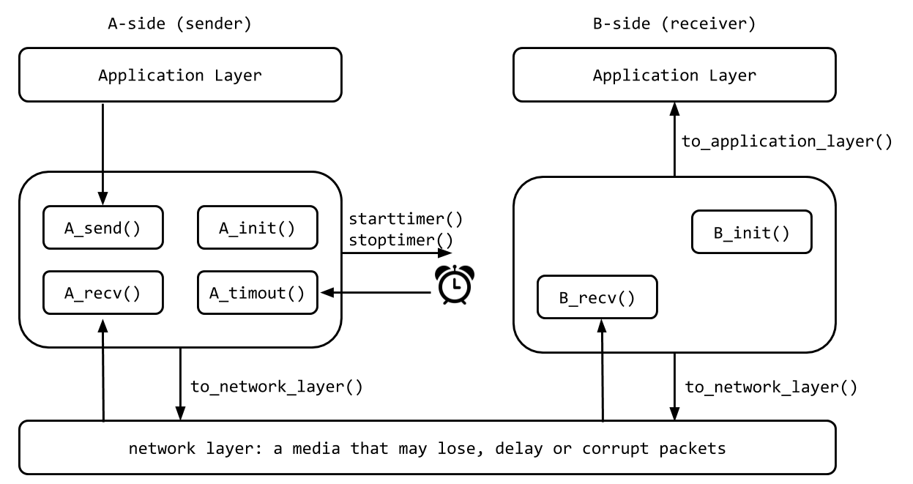

In this assignment, you will be writing the sending and receiving transport-level code for implementing two reliable data transfer protocols: Stop-And-Wait (SAW) and Go-Back-N (GBN). To learn more about these, you may need to watch the Week 4 and Week 5 Youtube videos, which include explanations of rdt3.0 and GBN.
Since we don't have standalone machines with an OS that you can modify, your code will execute in a simulated hardware/software environment. However, the programming interface provided to your routines, i.e., the code that would call your routines from above and from below is very close to what is done in an actual UNIX environment. Stopping/starting of timers are also simulated, and timer interrupts (timeouts) will cause your timer handling routine to be activated.
TODO: You may work on this assignment in groups of up
to 2 people. Try to find a partner (there is a "Look for Teammates"
post on the discussion board) or decide to work individually. If you
work in a group, create a group on MarkUs and invite your partner.
First, download the starter code here. You will use this starter code twice in this assignment. Once for implementing the Stop-And-Wait protocol and once for Go-Back-N. Read the starter code to understand what you'll need to do.
The procedures you will write are for the sending entity (A) and the receiving entity (B). Only unidirectional transfer of data (from A to B) is required. Of course, the B side will have to send packets to A to acknowledge the receipt of data. Your routines are to be implemented in the form of the procedures described below. These procedures will be called by (and will call) procedures that are provided in the starter code (which emulate a network environment). The overall structure of the environment is shown in the following picture.

The unit of data passed between the upper layers and your protocols is a message, which is declared as:
struct msg {
char data[MSG_SIZE];
};
Your sending entity A will receive data in chunks of size
MSG_SIZE bytes from the application layer; your receiving
entity B should deliver same-sized chunks of correctly received data to
application layer at the receiving side.
The unit of data passed between your routines and the network layer is the packet, which is declared as:
struct pkt {
int seqnum;
int acknum;
int checksum;
char payload[MSG_SIZE];
};
Your routines will fill in the payload field from the message data passed down from the application layer. The other packet fields will be used by your protocols to insure reliable transfer, as we've seen in class.
The routines you will write are detailed below. As noted above, such procedures in real-life would be part of the operating system, and would be called by other procedures in the operating system.
A_init(): This routine will be called once, before
any of your other A-side routines are called. It can be used to
do any required initialization. A_send(message), where message is a
structure of type msg, containing data to be sent
to the B-side. This routine will be called whenever the
application layer at the sending side (A) has a message to
send. It is the job of your protocol to insure that the data in
such a message is delivered in-order, and correctly, to the
receiving side's application layer.A_recv(packet), where packet is a
structure of type pkt. This routine will be called
whenever a packet sent from the B-side (i.e., as a result of a
to_network_layer() being done by a B-side
procedure) arrives at the A-side. The parameter packet
is the (possibly corrupted) packet sent from the B-side.A_timeout(): This routine will be called when A's
timer expires (thus generating a timer interrupt). You'll
probably want to use this routine to control the retransmission
of packets. See starttimer() and
stoptimer() below for how the timer is started and
stopped. B_init(): This routine will be called once, before
any of your other B-side routines are called. It can be used to
do any required initialization. B_recv(packet), where packet is a
structure of type pkt. This routine will be called
whenever a packet sent from the A-side (i.e., as a result of a
to_network_layer() being done by an A-side
procedure) arrives at the B-side. The parameter
packet is the (possibly corrupted) packet sent from
the A-side.The following routines (provided in the starter code) can be called by your routines:
starttimer(calling_entity, increment), where
calling_entity is either 0 (for starting the
A-side timer) or 1 (for starting the B side timer), and
increment is a float value indicating the amount
of time that will pass before the timer interrupts. A's timer
should only be started (or stopped) by A-side routines, and
similarly for the B-side timer. To give you an idea of the
appropriate increment value to use: a packet sent into the
network takes an average of 5 time units to arrive at the other
side when there are no other messages in the medium.stoptimer(calling_entity), where
calling_entity is either 0 (for stopping the
A-side timer) or 1 (for stopping the B side timer). to_network_layer(calling_entity, packet), where
calling_entity is either 0 (for the A-side send)
or 1 (for the B side send), and packet is a
structure of type pkt. Calling this routine will
cause the packet to be sent into the network, destined for the
other entity.to_application_layer(calling_entity,message), where
calling_entity is either 0 (for A-side delivery
to the application
layer) or 1 (for B-side delivery to the application layer), and
message is a structure of type msg. With
unidirectional data transfer, you would only be calling this with
calling_entity equal to 1 (delivery to the B-side).
Calling this routine will cause data to be passed up to the
application layer.A call to procedure to_network_layer() sends packets
into the medium (i.e., into the network layer). Your procedures
A_recv() and B_recv() are called when a
packet is to be delivered from the medium to your protocol layer.
The medium is capable of corrupting and losing packets. It will not reorder packets. When you run your program, you will specify values regarding the simulated network environment:
The above the parameters will be passed to your program as
command-line arguments in the following format (assuming the name of
the executable is a.out:
./a.out num_msgs loss_prob corrupt_prob interval
For example, you could run
./a.out 100 0.1 0.2 1000
Make a copy of the starter code and name it saw.c. You
will implement the Stop-And-Wait protocol in this file.
You will implement the rdt3.0 protocol that we learned
in class. You are to complete the six routines mentioned above to support
reliable unidirectional transfer of data from the A-side to the
B-side.
You should choose a very large value for the average interval
between messages from sender's application layer, so that your sender
is never called while it still has an outstanding, unacknowledged,
message it is trying to send to the receiver. I'd suggest you choose a
value of 1000. You should also perform a check in your sender to make
sure that when A_send() is called, there is no message
currently in transit. If there is, you can simply ignore (drop) the
data being passed to the A_send() routine.
Once you have tested your implementation and are convinced that it
is correct. You will write up some experimental results in a report
named report.pdf. You will present and argue that your
implemented protocol is correct using the printout of a test case
with 10 messages successfully transferred, a loss probability of 0.2,
a corrupt probability of 0.3, and an average interval of 1000. More
details about report.pdf in the "Submissions" section
below.
Make another copy of the starter code and name it
gbn.c. You will implement the Go-Back-N protocol in this
file.
You will implement the Go-Back-N protocol that we learned in class. You are to complete the six routines mentioned above to support reliable unidirectional transfer of data from the A-side to the B-side. The window size must be 8. Compared to Stop-And-Wait, below are some of the new considerations in the implementation of Go-Back-N .
A_send() routine will now sometimes be called
when there are outstanding, unacknowledged messages in the
medium - implying that you will have to buffer multiple
messages in your sender. Also, you'll also need buffering in
your sender because of the nature of Go-Back-N: sometimes your
sender will be called but it won't be able to send the new
message because the new message falls outside of the window.A_timeout() routine will be called when A's
timer expires (thus generating a timer interrupt). Remember
that you've only got one timer, and may have many outstanding,
unacknowledged packets in the medium, so you'll have to think a bit
about how to use this single timer.
Once you have tested your implementation and are convinced that your
Go-Back-N is correct. You will write up some experimental results in a
report named report.pdf. You will present and argue that
your implemented protocol is correct using the printout of a test
case with 20 messages successfully transferred, a loss probability of
0.2, a corrupt probability of 0.3, and an average interval of 10. More
details about report.pdf in the "Submissions" section
below.
Below are some tips that you might find helpful.
time that
you can access from within your code to help you out with your
diagnostics msgs. TRACE variable defines the verbosity level of
the printout. You may adjust it according to your need. Read
the code to understand what each trace level means.
jimsrand(), then you'll need to look
at how random numbers are generated in the routine
jimsrand().
Below are some specific requirements your code needs to satisfy just so that it can be properly marked by the TA.
gcc saw.cgcc gbn.cGCC
7.4 (the version on the lab computers). ./a.out 100 0.2 0.3 10
include other than what's
already included in the starter code.stderr in the code
your write, i.e., do NOT write any line like
fprintf(stderr, ...). However, feel free to use
printf which prints to stdout.You will submit the following three files using the web submission interface of MarkUs.
saw.c: the code that implements the Stop-And-Wait protocol.gbn.c: the code that implements the Go-Back-N protocol.report.pdf: the report that includes the following,
You can submit the same filename multiple times and only the latest version will be marked, so it is a good practice to submit your first version well before the deadline and then submit a newer version to overwrite when you make some more progress. Again, make sure your code runs as expected on a lab computer.
Late homework submissions are penalized by 1% for every hour of lateness, rounded up, to a maximum of 24 hours. Submissions will no longer be accepted 24-hours past the deadline, except for documented unusual circumstances.
Below is the tentative overall marking scheme of this assignment:
Coding style matters. Your code must be written in a proper style and must be well commented so that anyone else can read your code and easily understand how everything works in your code.
Please be reminded that ALL assignment submissions will be checked for plagiarism at the end of the term. Make sure to maintain your academic integrity carefully, and protect your own work. It is much better to take the hit on a lower assignment mark (just submit something functional, even if incomplete), than risking much worse consequences by committing an academic offence.
You can implement bidirectional transfer of messages. In this case,
entities A and B operate as both a sender and receiver. You may also
piggyback acknowledgments on data packets (or you can choose not to do
so). To get the simulator to deliver messages from the application
layer to your B_send() routine, you will need to change
the declared value of BIDIRECTIONAL from 0 to 1.
This part is for fun only. We will not mark it. If you submit code
that supports bidirectional transfer, make sure everything still works
correctly when BIDIRECTIONAL is 0 since that's what we
mark.